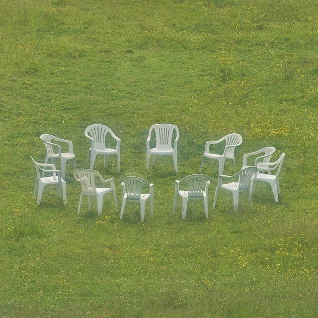

After nine or ten nights he understood with a certain bitterness that he could expect nothing from those pupils who accepted his doctrine passively, but that he could expect something from those who occasionally dared to oppose him.
The former group, although worthy of love and affection, could not ascend to the level of individuals; the latter pre-existed to a slightly greater degree. One afternoon (now afternoons were also given over to sleep, now he was only awake for a couple hours at daybreak) he dismissed the vast illusory student body for good and kept only one pupil.
He was a taciturn, sallow boy, at times intractable, and whose sharp features resembled of those of his dreamer. The brusque elimination of his fellow students did not disconcert him for long; after a few private lessons, his progress was enough to astound the teacher. Nevertheless, a catastrophe took place.
One day, the man emerged from his sleep as if from a viscous desert, looked at the useless afternoon light which he immediately confused with the dawn, and understood that he had not dreamed. All that night and all day long, the intolerable lucidity of insomnia fell upon him.
He tried exploring the forest, to lose his strength; among the hemlock he barely succeeded in experiencing several short snatchs of sleep, veined with fleeting, rudimentary visions that were useless. He tried to assemble the student body but scarcely had he articulated a few brief words of exhortation when it became deformed and was then erased.
In his almost perpetual vigil, tears of anger burned his old eyes.